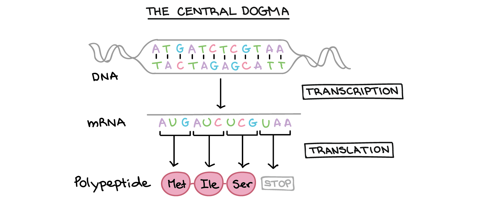

“Tips and Tricks” for pre-training DNA foundation models on an academic budget.
MLRG Talks & Brainstorms
![]()
July 22, 2025
Outline
- Foundation models in genomics
- Some examples
- Different pre-training strategies
- BarcodeBERT
- Motivation (The story of BarcodeMAE)
- Engineering Optimizations
- Mixed precision computation
- Fused operations
- Architectural Optimizations
- CNN-based tokenization (AlphaGenome)
- Jumbo CLS and registers
- Preliminary Results
- Conclusion and Future Work
Foundation models for molecular information
Foundation models in the -omics
“A foundation model is any model that is trained on broad data and can be adapted to a wide range of downstream tasks” (Bommasani et al., 2021).
- Full understanding of genomic information as a language is particularly hard because every cell has the same “set of instructions” but it differentiates into various cell types
- Every genome is composed of several regions corresponding to different abstraction levels (modalities)

One of the easiest way of tackling this “problem” was developing one model or each data modality.
Foundation models in the -omics
- Since only ~2% of the genome codes for proteins, several specialized models have been develped the DNA regions whose function is fully understood.
- Optimal design choices may vary from one “domain” to another.
- We will focus on the DNA modality for the rest of the talk.
Some examples of DNA fundation models
Many design Choices in DNA Foundation Models
- Tokenization: k-mers / BPE / single-nucleotide
- Pretraining objectives: MLM, autoregressive, span-prediction, supervised, distillation
- Architecture: encoder-only, decoder-only, encoder–decoder, state-space, U-Net, MoE
- Positional encodings: Sinusoidal, RoPE, ALiBi, Learned
- Data domain: Barcodes, human, multi-species genomes, metagenomes, Fungal ITS
- Model scale: from ~1 M to >40 B parameters
Representative Models
- HyenaDNA: arXiv:2306.15794
- MambaDNA: arxiv:2403.03234
- BarcodeBERT: arXiv:2311.02401
- BarcodeMamba: OpenReview:6ohFEFTr10
- Nucleotide Transformer: Nat. Methods 2024
- AlphaGenome: biorxiv:2025.06.25.661532v2
- Evo: Arc Institute
- MycoAI: PubMed:39152642
- JanusDNA: arXiv:2505.17257
BarcodeBERT
- BarcodeBERT is a BERT-base transformer model pretrained on ∼1M invertebrate DNA barcodes (Millan Arias et al., 2024).
- It models k-mer co-occurrence via masked LM, randomly masking 50 % of tokens and minimizing \(\mathcal{L}_{\text{MLM}}=-\sum_{i\in M}\log P(x_i\mid x_{\setminus M}),\) where \(M\) is the set of masked-out tokens.
Hidden states serve as features for linear probes or k-NN classification.
Motivation: The story of BarcodeMAE
BarcodeMAE
Adaptation of MAE (He et al., 2022): Mask 50 % of k-mers, reconstruct via an encoder–decoder architecture
- Reviewer request: rerun experiments on a more general (larger) dataset.
- Challenge: We chose DNABERT-2’s dataset (architecturally similar) but it takes 12 days/train on 4×A40 → unsustainable for iterations
- Takeaway: We need “tips & tricks” for faster prototyping and efficient pretraining.
- I will only consider the GPU that we have “easy” access to (A40, T4, V100, RTX6000).
Engineering Optimizations
Mixed Precision Training (AMP)
Floating-Point Formats
The algorithm, first introduced by (Narang et al., 2024) requires two steps:
- Porting the model to use the FP16 data type where appropriate.
- Adding loss scaling to preserve small gradient values.
\[\tilde L = S \times L,\quad g = \tfrac{\partial \tilde L}{S}\]
In Pytorch, “automatic mixed precision training” means training with torch.autocast and torch.amp.GradScaler together.
Mixed Precision Training (AMP)
Performance
I investigated the impact of AMP for our model in terms of runtime, prediction accuracy, and memory requirements.
This preliminary results show ~3.2× speedup & ~16% lower peak GPU memory.
Attention Kernel Implementations
Naive (non-fused)
GPUs run thousands of threads in lockstep executing the same piece of code (kernel). In deep learning, every op. is implemented as one or more CUDA kernels.
\[\text{Attn}(Q, K, V) = \text{softmax} \left( \frac{Q K^T}{\sqrt{d}} \right) V \]
scores = torch.matmul(q, k.transpose(-1, -2)) / math.sqrt(d)
probs = torch.softmax(scores, dim=-1)
y = torch.matmul(probs, v)The previous implementation of attention launches separate kernels for query-key, softmax, and value matmul and stores the entire matrices
Attention Kernel Implementations
Fused kernels
Combine matmul, softmax & dropout in one CUDA pass, cutting activations to \(O(L)\) and reducing launch overhead.
Fused kernels are the foundation of modern efficient attention. Specialized domains and new hardware continue to drive custom kernel work.
- FlashAttention: Tiling-based, reduce the number of I/O operations but increase FLOPS.
- xFormers:
memory_efficient_attention(q,k,v,attn_bias=bias) - PyTorch 2.0:
torch.scaled_dot_product_attention - Custom kernel design: DiNO v2 uses custom-made kernels
Integrating fused kernels to our pipeline
- Refactoring BarcodeBERT under MosaicBERT’s (Portes et al., 2024) composable architecture (Monireh’s work / Only supported on architectures \(\geq\) Ampere).
- Monkey-patch HuggingFace’s
BertSelfAttentionusing an efficient attention implementation.
import torch
import torch.nn as nn
import torch.nn.functional as F
from transformers import BertForTokenClassification
class FastSelfAttention(nn.Module):
def __init__(self, config):
super().__init__()
self.num_heads = config.num_attention_heads
self.head_size = config.hidden_size // config.num_attention_heads
self.all_head_size = config.hidden_size
self.query = nn.Linear(config.hidden_size, self.all_head_size)
self.key = nn.Linear(config.hidden_size, self.all_head_size)
self.value = nn.Linear(config.hidden_size, self.all_head_size)
self.dropout = nn.Dropout(config.attention_probs_dropout_prob)
def forward(self, hidden_states, attention_mask=None):
B, L, D = hidden_states.size()
# project and reshape for multi-head
q = self.query(hidden_states).view(B, L, self.num_heads, self.head_size).permute(0,2,1,3)
k = self.key(hidden_states) .view(B, L, self.num_heads, self.head_size).permute(0,2,1,3)
v = self.value(hidden_states).view(B, L, self.num_heads, self.head_size).permute(0,2,1,3)
# fused scaled‐dot‐product attention
dp = self.dropout.p if self.training else 0.0
context = F.scaled_dot_product_attention(
q, k, v,
attn_mask=attention_mask,
dropout_p=dp,
is_causal=False
)
# merge heads
context = context.permute(0,2,1,3).contiguous().view(B, L, D)
return context
class FastBertForTokenClassification(BertForTokenClassification):
def __init__(self, config):
super().__init__(config)
# replace each layer’s self-attention
for layer in self.bert.encoder.layer:
layer.attention.self = FastSelfAttention(config)Integrating fused kernels to our pipeline
Performance
I investigated the impact of fused attention Kernels for our model in terms of runtime and memory requirements.
This preliminary result is somewhat expected as fused-kernels’ improvements in other domains ofetn appear for larger inputs and more specialized hardware.
Architectural Optimizations
A recent breakthrough in computational biology: AlphaGenome
AlphaGenome (DeepMind, June 2025) is the first unifying DNA sequence model that jointly predicts thousands of regulatory readouts (gene expression, chromatin accessibility, 3D contacts, splicing) from up to 1M nucleotides.
“By extending “AlphaGenome” beyond proteins into noncoding DNA, it tackles the genome’s “dark matter” with base-level resolution and long-range context.
Architecture & Training
Architecture Overview
- Conv encoder extracts local motifs via stacked Conv1D (
DNA embedder(num_channels=768, width=15)). - U-Net pyramid pools & upsamples for multiscale features.
- Sparse-Attn transformer uses sliding windows + Rotary positional Encoding + global tokens for long-range.
- Classification heads: separate heads for each genomic track (regression/class).
Architecture & training
Training

- Supervised pretrain on thousands of experimental tracks (ENCODE, GTEx, 4D Nucleome, FANTOM5) covering hundreds of human & mouse cell types.
- Distillation via held-out cell-type folds to compress and stabilize predictions.
Idea: CNN-Based encoder
Adapted AlphaGenome’s conv frontend into BarcodeBERT. Vision folks might be familiar with this idea through (Xiao et al, 2021):
class CNN_MLM(nn.Module):
def __init__(
self,
max_len: int,
d_model: int = 768,
nhead: int = 4,
num_layers: int = 3,
dropout: float = 0.1,
):
super().__init__()
self.max_len = max_len
# --- Single Conv block + Norm + Dropout + Pool ---
self.conv_1 = nn.Conv1d(5, d_model, kernel_size=4, stride=2, padding=1)
self.conv_2 = nn.Conv1d(5, d_model, kernel_size=4, stride=2, padding=1)
self.norm = nn.LayerNorm(d_model)
self.drop = nn.Dropout(dropout)
self.pool = nn.MaxPool1d(kernel_size=2, stride=2)
# Compute downsampled length
# After conv: ceil(max_len/2), after pool: ceil(prev/2)
L1 = math.ceil(max_len / 2)
L2 = math.ceil(L1 / 2)
self.down_len = L2
# --- Learned positional embeddings ---
self.pos_emb = nn.Embedding(self.down_len, d_model)
# --- BERT-style Transformer ---
encoder_layer = nn.TransformerEncoderLayer(
d_model=d_model,
nhead=nhead - 1,
dim_feedforward=4 * d_model,
dropout=dropout,
activation="gelu",
)
self.transformer = nn.TransformerEncoder(encoder_layer, num_layers=num_layers)
# --- Upsampling via ConvTranspose1d x2 ---
self.up1 = nn.ConvTranspose1d(d_model, d_model, kernel_size=2, stride=2)
self.act_up1 = nn.GELU()
self.up2 = nn.ConvTranspose1d(d_model, d_model, kernel_size=2, stride=2)
self.act_up2 = nn.GELU()
# --- Final classification head over 4 bases ---
self.classifier = nn.Linear(d_model, 4)Idea: CNN-Based encoder
Performance
Below is a summary of the masked‐language‐modeling (MLM) objective performance when using the CNN tokenizer at different masking ratios:
| Masking Ratio | Unseen Accuracy | Seen Accuracy | kNN |
|---|---|---|---|
| 0.5 | 92 % | 100 % | 55 % |
| 0.6 | 89 % | 100 % | 61 % |
| 0.7 | 88 % | 100 % | 67 % |
Limitations:
- This taks allows for a more aggressive masking ratio, but it does not translate as a performance improvement.
- The decoder is currently a naive linear head.
- No relative or rotary positional encoding — pure conv + absolute PE.
- Training was performed on 1x A40 GPU, so timing is not comparable
Idea: Use (more) global tokens
Bojanowski et al. (Meta AI, 2022) found that vision transformers’ single [CLS] token can bottleneck global summarization. Leading to the re-purposing of some tokens by the model as registers. Their idea consisted in prepending a series of learnable tokens that the model can use to enocde useful informations.
Idea: Use (larger) global tokens
Jumbo CLS
A recent related paper follows-up on that idea and introduced the concept of a Jumbo CLS token that acts as \(J\) parallel register tokens that each learn a different global perspective.
Define a single \(Jd\)-dimensional lerneable parameter and prepend it to inputs. Split it before the MSA to preservedimensionality and flatten the registers to \(h\in\mathbb{R}^{Jd}\) to summarize with a dedicated network:
\[ \hat y = \mathrm{MLP}(h)\in\mathbb{R}^{d} \]
Preliminary Results
Summary of preliminary results
| AMP | Fused Attn | CNN | Peak Ram (GB) | Hardware @ Training Time | kNN (%) | |
|---|---|---|---|---|---|---|
| BarcodeBERT++ | ✔ | ✖ | ✖ | 21.2 | 07 hr 04 min @ 1x V100 | 73.40 |
| ✖ | ✔ | ✖ | N / A | 22 hr 37 min @ 1x V100 | 71.46 | |
| ✔ | ✔ | ✖ | N / A | 07 hr 44 min @ 1x V100 | 73.68 | |
| ✖ | ✖ | ✔ | N / A | 07 hr 56 min @ 1x A40 | 67.02 | |
| BarcodeBERT | ✖ | ✖ | ✖ | 25.2 | 22 hr 50 min @ 1x V100 | 70.68 |
Discusison & Future Work
- AMP delivers ~3× speedup as promised and fused-attention short barcodes are underwhealming.
- These results scream refactoring: port to HuggingFace Trainer or Lightning Fabric (or MosaicBERT) to handle AMP, mixed precision, and logging seamlessly.
- I was unable to reach the advertised 78.5 % k-NN accuracy on a single V100—indicating either hardware or and hyperparameter sensitivity.
- Next steps:
- Integrate Jumbo CLS with the CNN tokenizer to shrink model size and speed training.
- Implement a mixed-objective encoder–decoder (MAE-style) decoder.
- Rerun experiments on the DNABERT-2 dataset for direct comparison.
- Integrate Jumbo CLS with the CNN tokenizer to shrink model size and speed training.
References
- Bommasani R. et al., “On the Opportunities and Risks of Foundation Models,” arXiv (2021).
- He K. et al., “Masked Autoencoders Are Scalable Vision Learners,” CVPR (2022).
- Ji Y. et al., “DNABERT-2: a Transformer Model for DNA Sequence,” Bioinformatics (2023).
- Safari M. et al., “BarcodeBERT: Transformers for Biodiversity Analysis,” arXiv (2024).
- Avsec Ž. et al., “AlphaGenome: Advancing Regulatory Variant Effect Prediction,” bioRxiv (2025).
- Dao T. et al., “FlashAttention: Fast and Memory-Efficient Exact Attention,” NeurIPS (2022).
- Press O. et al., “Long Sequence Modeling with ALiBi,” arXiv (2022).
- Su J. et al., “RoFormer: Enhanced Transformer with Rotary Positional Encoding,” arXiv (2021).
- “MosaicBERT: Composable Efficient Transformers,” Databricks Blog (2024).
- “Accelerating Large Language Models with Mixed Precision Techniques,” Lightning AI Blog (2023).
- “torch.cuda.amp,” PyTorch Documentation (2025).